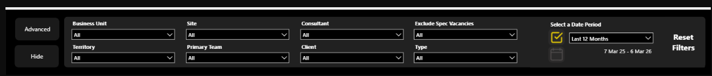
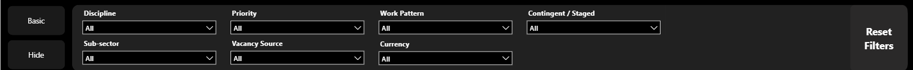
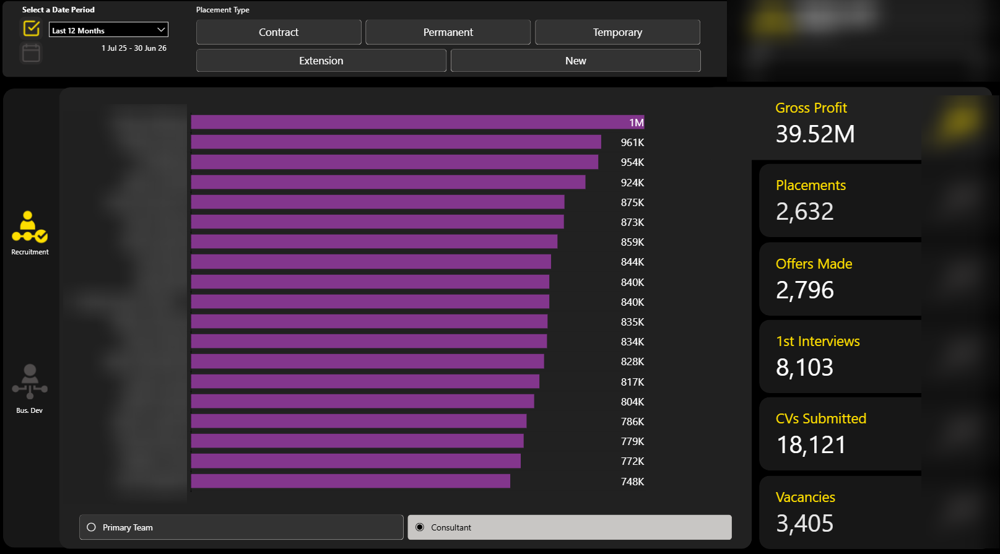
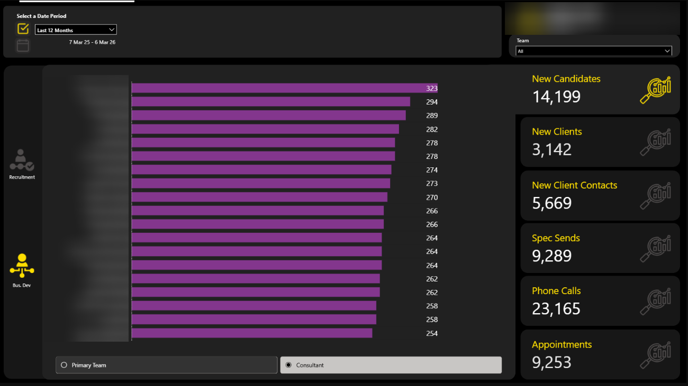
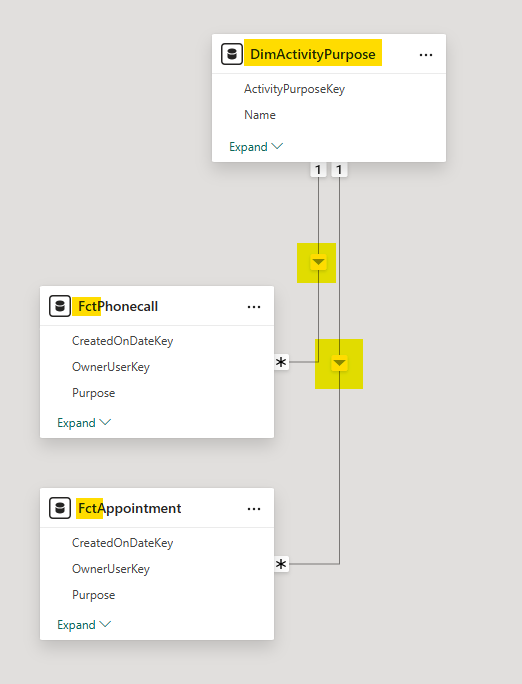

Context
We have a multi-fact report (internally known as 'Team Leaderboard') with various slicers which have been added on an ad hoc basis as feedback has been received from stakeholders over time. As a result the report user interface was out of sync with the rest of the reports in the suite.
The Product Owner wished to align this report with the other reports and posed the question whether it was possible to add a filter panel with slicers in an almost identical manner to how it is done in other reports.
In particular there were historical modelling reasons why this report was built differently and the investigation was to discover whether these limitations were still current.
Below is a write-up of the options investigated to achieve this:
Executive Summary
It is possible to introduce a filter panel to the Team Leaderboard for both basic and advanced slicers so the report looks consistent with the other reports in the suite.
However certain slicers in the proposed list will not affect the values due to no relationship being present.
Prior to implementation a decision needs to be made whether this behaviour is acceptable or whether additional data modelling work needs to be explored and implemented to create the required relationships.
1. Objective
1.1 Background
Most of the reports in the analytics suite have a panel at the top of each page containing a set of "basic" slicers to allow the user to filter the visuals and KPIs shown to a subgroup of the data, e.g. their own team
Via a button / bookmark combination it is also possible for the user to navigate from the "basic" slicers to further "advanced" slicers. All of this interactivity allows the user to view the visuals by the exact categories and subgroups they desire.


1.2 The Ask
The Team Leaderboard report does not contain this panel of basic and advanced slicers. The report is made up of two pages (Recruitment Activity and Business Development Activities) and a number of drillthrough pages from these two.
This item is to look into the feasibility of adding this functionality into the two pages of the report to increase UI consistency across all reports in the suite. In particular, there were 4 questions posed:
- Can a single Type slicer be used like in other reports in place of the two separate 'Placement Type' and 'Vacancy Type' slicers in the report?
- Can the current New/Existing button slicers be replaced with a dropdown slicer?
- Could the existing 'Appointment Purpose' and 'Phonecall Purpose' be merged into one general 'Purpose'?
- If so, what would be the implications / limitations?
- Would it be sensible to treat them as separate slicers?
- Can we ensure that the existing drill through functionality is maintained.
2. Investigation
The Recruitment Activity page on the Team Leaderboard is made up of one bar chart visual with 6 navigation tabs on the right hand side.
The y-axis will either display at Consultant level or Team level (this is user-configured) and the x-axis displays a measure which returns a count or a sum. The metric displayed varies depending on the tab the user is on. The different options are:
- Gross Profit
- Placements
- Offers Made
- 1st Interviews
- CVs Submitted
- Vacancies

The Business Development Activities page has a similar pattern but the options available are:
- New Candidates
- New Clients
- New Client Contacts
- Spec Sends
- Phone Calls
- Appointments

2.1 Will The Slicers Work?
In Power BI, slicers affect the values in the visuals due to filter propagation.
So a selection made in the slicer then propagates from this dimension table via a relationship to the fact table filtering the fact records too. This ensures a subset of the original fact table records are returned.
The relevant measure then runs across this filtered subset to produce its answer. Filter first, aggregate second.
Key principle: In Power BI, measures don't aggregate over the whole fact table. Instead they aggregate over whatever subset of rows remains after filter propagation through the semantic model. Understanding which rows (are allowed to) participate in the aggregation is the real puzzle.

So the key to knowing whether a slicer in the panel will achieve what we need is to identify whether there are relationships in play between:
(a) the dimensions the filter values come from and:
(b) the fact tables which are responsible for the measures in the visuals.
The effectiveness of the slicer is completely dependent upon the relationship between the dimension table and the fact table in the semantic model.Where no relationship exists, the slicer will appear to function but will not affect the measure and therefore the underlying numbers won't change.
2.2 Table Relationships
In the following diagram, down the left hand side we have included all the dimension tables used to create the slicers.
Across the top are all the fact tables which are responsible for the numbers in the various visuals in the Team Leaderboard report.
| Slicer Dimension / Fact Table | FctPlacement | FctShortlist | FctVacancy | FctContact | FctClient | FctSpeculativeSend | FctPhonecall | FctAppointment |
|---|---|---|---|---|---|---|---|---|
| DimUser | ✔ | ✔ | ✔ | ✔ | ✔ | ✔ | ✔ | ✔ |
| DimClient* | ✔ | ✔ | ✔ | ✔ | ✔ | ✔ | ❌ | ❌ |
| SpecVacancySelector | ✔ | ✔ | ✔ | ❌ | ❌ | ❌ | ❌ | ❌ |
| DimType | ✔ | ✔ | ✔ | ❌ | ❌ | ❌ | ❌ | ❌ |
| DimFeeBasedOn | ✔ | ✔ | ✔ | ❌ | ❌ | ❌ | ❌ | ❌ |
| DimActivityPurpose** | ➖ | ➖ | ➖ | ➖ | ➖ | ➖ | ➖ | ➖ |
*via DimClientContact
**proposed dimension (replacing the existing two purposes)
A checked box in the diagram confirms there is a relationship between the relevant dimension and fact tables. And therefore that the slicer will filter the data correctly.
The table tells us the following:
- The client slicer won't filter the phone call or appointments visuals.
- Exclude Spec Vacancies slicer won't filter on the Business Development Activities page.
- Contingent / Staged slicer won't filter on the Business Development Activities page.
- Currency slicer won't filter on the Business Development Activities page.
3. Addressing The Questions Posed
3.1 Can a single type slicer be used?
Yes. As the backend work to unify both sorts of type was completed after this report was created, it could not be done at the time but is a simple implementation now.
The existing slicers can both be replaced with the type slicer originating from the relatively new DimType table.
3.2 Can the New / Extensions button slicer be a dropdown?
Yes, these options, as they exist, are non-overlapping. A given placement can either be a new placement or an extension (of a previous) placement. Given this, the options can be presented in a dropdown slicer.
There are two possible options to implement this:
- a multi-select slicer with 'New' and 'Extension' as the two options. The user would then need to select either both or neither to view all placements.
- a slicer with three options where 'Select all' is the third option.
3.3 Can the Appointment purpose and phonecall purpose slicers be combined into one dropdown?
Yes. The appointment and phone call purposes are derived from the same table in the data warehouse: staging.ActivityPurpose.
This is itself derived from one table in Core.
So we can instead use this source table as our source for purpose globally i.e. whether it's appointment or phonecall.
In order to do this I would suggest perhaps a re-purpose of the existing DimActivityPurpose (which is created currently from the staging.ActivityPurpose).
We would need to at least add the activityID column into the view that serves Power BI and then create relationships to FactPhonecall and FactAppointment in Power BI using this ID column as the key.
However if we were to take this approach there are a couple of considerations:
3.3.1 User Experience
There may be options in the dropdown that do not apply to appointments and conversely some that do not apply to phonecalls. Is this going to be confusing to the end user?
This can be somewhat mitigated against because within that DimActivityPurpose table there are columns called IsPhonecall and IsAppointment. We could theoretically use these (set to True) on the relevant pages/bookmarks so only context-relevant options appear in this proposed purpose dropdown.
3.3.2 Changes in Multiple Places
Using a single purpose filter will mean that both Phonecalls and Appointment total numbers on the headline cards on the right hand side will change at the same time.
Even by using IsPhonecall / IsAppointment in a way as described in 3.3.1 above will not prevent this as there are some purposes common to both.
Technically it's not wrong but it may be a bit off-putting to the user?
3.3.3 Deliberate Isolation of Purposes
I feel like elsewhere in the reporting suite we have consciously decided to treat appointment purposes and phonecall purposes separately from one another.
This proposed change (in particular creating the relationships) may impact those areas.
3.4 Do any of the proposed changes affect the drillthrough behaviour?
The drillthrough functionality is controlled by the measures used in the visuals. Since we are not changing the visuals materially only allowing the user to limit the amount of data which flows to the visuals, this functionality will remain intact.
4. Outstanding Questions
Why do this? Is the end result worth the effort involved? Although not complicated there is a non-trivial amount of work involved in this:
- SQL development (~0.5 days)
- Power BI modelling changes (~0.5 days)
- Power BI UI changes (~2 days)
- removal of existing slicers (placement type, new / extension, vacancy type, team, phone call and appointment purpose)
- introduction of basic / advanced slicer panels including filter iconography and buttons
- introduction of bookmarks for navigation and resetting slicers
If we go ahead with these changes, do we want to add headline cards? After these changes have been implemented, when initially opening the report, the headline panel will be blank with just a funnel icon to the left.
5. Options
Depending on the questions posed in section 4, there are 3 options on how to take this forward:
| Option | Detail | Advantages | Disadvantages |
|---|---|---|---|
| A: Implement fully now | Add basic and advanced slicers to both pages of the report. | Report user experience is enhanced as more able to slice and dice data. | As per the checkboxes above, some slicers will have no effect on certain visuals. |
| B: Implement partially now | Implement basic and advanced slicers to both pages but be selective about when certain slicers are visible to be used. | User experience is enhanced. User only gets to filter the data using relevant slicers. | Slicers disappear and re-appear depending on navigation. Not a satisfactory user experience. |
| C: Leave report as is | Make no changes to the report. | No work required. | Report will have different functionality to the rest of the reporting suite. |
| D: Redesign model | Redesign the semantic model so that all the proposed slicers work across all visuals at all times. | Clean semantic model where all slicers behave consistently across all visuals. | Significant engineering effort. Potentially disproportionate to the UI consistency goal. Will impact all reports (i.e. large blast radius). |
6. Recommendation
I would tentatively recommend we go ahead with option A. Not just so the report is consistent with rest of the suite but because it also allows the user to be able to interact more and gain even more insight and decision-making power from the report.
The reason I'm tentative is because I have concerns involving the four questions posed at the end of section 2 and the three points made at the end of section 3.3 above.
What Happened Next?
The team is currently considering prototypes for both Option A and a hybrid approach close to Option B where the basic and advanced slicers are introduced but the existing slicers in the report remain.